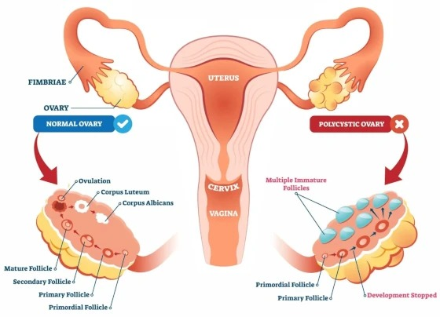

PCOS vs PCOD: What's the Difference? A Complete Guide
Hormonal disorders affecting women's reproductive health have become increasingly common in recent years. Among them, PCOS (Polycystic Ovary Syndrome) and PCOD (Polycystic Ovarian Disease) are two of the most frequently discussed conditions. Although many people use these terms interchangeably, they are not exactly the same.
Understanding the difference between PCOS and PCOD is important because early diagnosis and proper treatment can help prevent long-term health complications and improve fertility, menstrual health, and overall well-being.
In this guide, we'll explain everything you need to know about PCOS and PCOD, including symptoms, causes, diagnosis, treatment options, and lifestyle changes.
What is PCOD?
Polycystic Ovarian Disease (PCOD) is a condition in which the ovaries produce partially mature or immature eggs. Over time, these eggs develop into small cysts within the ovaries.
This hormonal imbalance causes the ovaries to become enlarged and may lead to irregular menstrual cycles.
PCOD is considered a common hormonal condition affecting many women of reproductive age. Most women with PCOD can manage their symptoms successfully through lifestyle changes and medication.
Common Characteristics of PCOD
- Irregular periods
- Enlarged ovaries
- Multiple immature follicles
- Weight gain
- Mild hormonal imbalance
- Acne and oily skin
What is PCOS?
Polycystic Ovary Syndrome (PCOS) is a more complex hormonal and metabolic disorder. In addition to affecting the ovaries, PCOS impacts the body's insulin levels, hormone balance, and overall metabolism.
Women with PCOS often produce higher-than-normal levels of male hormones (androgens), which interfere with normal ovulation.
Unlike PCOD, PCOS is considered a syndrome because it involves multiple body systems and may increase the risk of several chronic health conditions.
PCOS May Increase the Risk of:
- Type 2 Diabetes
- High blood pressure
- Heart disease
- Obesity
- Sleep apnea
- Depression and anxiety
- Infertility
PCOS vs PCOD: Key Differences
To help clear the confusion, here is a breakdown of how the two conditions differ:
| Feature | PCOD | PCOS |
|---|---|---|
| Condition Type | Ovarian disorder | Hormonal & metabolic syndrome |
| Severity | Usually mild | More serious |
| Ovulation | Irregular | Often absent |
| Fertility | Usually preserved | May be significantly affected |
| Insulin Resistance | Rare | Very common |
| Weight Gain | Sometimes | Common |
| Hormonal Imbalance | Mild | Significant |
| Long-term Health Risks | Low | Higher |
Symptoms of PCOD and PCOS
Many symptoms overlap, making professional medical diagnosis essential. Irregularities in your body should not be self-diagnosed.
Irregular Menstrual Cycles
One of the earliest signs is periods that:
- Come late
- Skip several months
- Are unusually heavy
- Are unusually light
Excessive Hair Growth
Higher androgen (male hormone) levels may lead to unwanted hair growth on the:
- Face & Chin
- Chest
- Back
- Abdomen
Acne
Persistent acne that doesn't improve with routine skincare may be linked directly to hormonal imbalances.
Weight Gain
Many women experience weight gain, especially around the abdomen, and face difficulties losing weight.
Hair Thinning
Some women notice hair fall, reduced hair density, or male-pattern hair loss (alopecia).
Difficulty Getting Pregnant
Irregular or absent ovulation can make conception more difficult, particularly for those diagnosed with PCOS.
Dark Skin Patches
Dark, velvety patches of skin (Acanthosis Nigricans) around the neck, underarms, or groin may indicate insulin resistance, which is highly common in PCOS.
Causes of PCOS and PCOD
The exact cause of both conditions remains unknown, but several intersecting factors contribute:
- Hormonal Imbalance: An imbalance in reproductive hormones directly disrupts ovulation.
- Genetics: Women with a family history of hormonal issues or metabolic conditions are more likely to develop PCOS or PCOD.
- Insulin Resistance: Common in PCOS, insulin resistance causes the body to produce excess insulin, which in turn triggers the ovaries to produce more androgens.
- Lifestyle Factors: Poor diet, lack of exercise, obesity, chronic stress, and poor sleep quality significantly exacerbate symptoms.
How Are PCOS and PCOD Diagnosed?
A gynecologist will typically recommend multiple evaluations to make an accurate diagnosis:
- Medical History: Discussing menstrual cycle patterns, weight fluctuations, fertility concerns, and family history.
- Physical Examination: Checking for acne, hair growth pattern, Body Mass Index (BMI), and blood pressure.
- Blood Tests: Testing hormone levels (Testosterone, LH, FSH, thyroid profile) as well as blood sugar and insulin levels.
- Ultrasound: A pelvic ultrasound helps identify enlarged ovaries or multiple small ovarian follicles (often forming a characteristic "string of pearls" pattern).
Treatment Options
Treatment plans depend heavily on the woman's age, specific symptoms, and future pregnancy goals.
Lifestyle Modification
This is universally considered the first line of treatment. Even a modest 5–10% reduction in body weight can lead to significant improvements in hormone balance, regular periods, and overall symptoms.
- Adopting a healthy, nutrient-rich eating plan
- Structured weight management strategies
- Regular physical exercise
- Improving sleep habits
- Active stress reduction
Medications
Doctors may prescribe target medications:
- Hormonal contraceptive pills to regulate periods
- Medicines to improve insulin sensitivity (such as Metformin)
- Ovulation-inducing medications for women planning pregnancy
- Acne treatments and anti-androgen medicines (when appropriate)
Note: Always consult your gynecologist before starting, stopping, or modifying any medication.
Fertility Treatments
Women facing difficulty conceiving due to irregular ovulation may benefit from:
- Ovulation induction cycles
- IUI (Intrauterine Insemination)
- IVF (In Vitro Fertilization)
Lifestyle Changes That Help
Eat a Balanced Diet
Include:
- Fresh vegetables and fruits
- Whole grains (brown rice, oats, quinoa)
- Lean proteins (chicken, fish, tofu, legumes)
- Healthy fats (nuts, seeds, olive oil, avocados)
Limit:
- Sugary drinks, sodas, and energy drinks
- Fried foods, processed snacks, and fast food
- Refined carbohydrates (white bread, white flour products)
Exercise Regularly
Aim for at least 150 minutes of moderate-intensity physical activity each week. Mix different activities:
- Walking, jogging, or cycling
- Swimming
- Strength training
- Yoga and Pilates
Manage Stress
Stress causes changes in endocrine function and elevates cortisol, affecting other hormone levels. Practices such as meditation, deep breathing, reading, music, and pursuing hobbies are highly beneficial.
Get Enough Sleep
Adults should aim for 7–8 hours of quality, restful sleep every night to facilitate hormonal recovery.
Maintain a Healthy Weight
Weight management can improve hormone balance, support regular ovulation, boost fertility, and regulate blood sugar levels.
Can PCOS or PCOD Be Cured?
There is no permanent cure, but both conditions can be highly managed. With early diagnosis, proper medical treatment, and healthy lifestyle choices, many women successfully regulate their cycles, conceive, resolve physical symptoms, and lead healthy, active lives.
When Should You See a Gynecologist?
Consult a doctor if you experience:
- Periods absent for more than three months
- Highly irregular or unpredictable cycles
- Severe or sudden acne
- Excessive facial or body hair growth
- Rapid weight gain without changes in diet or activity
- Difficulty getting pregnant
- Persistent pelvic pain
- Unusually heavy menstrual bleeding
Early medical advice helps in formulating a customized plan and avoiding future complications.